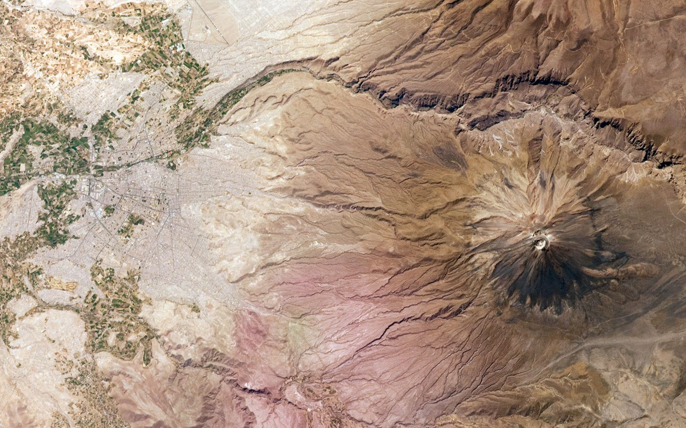
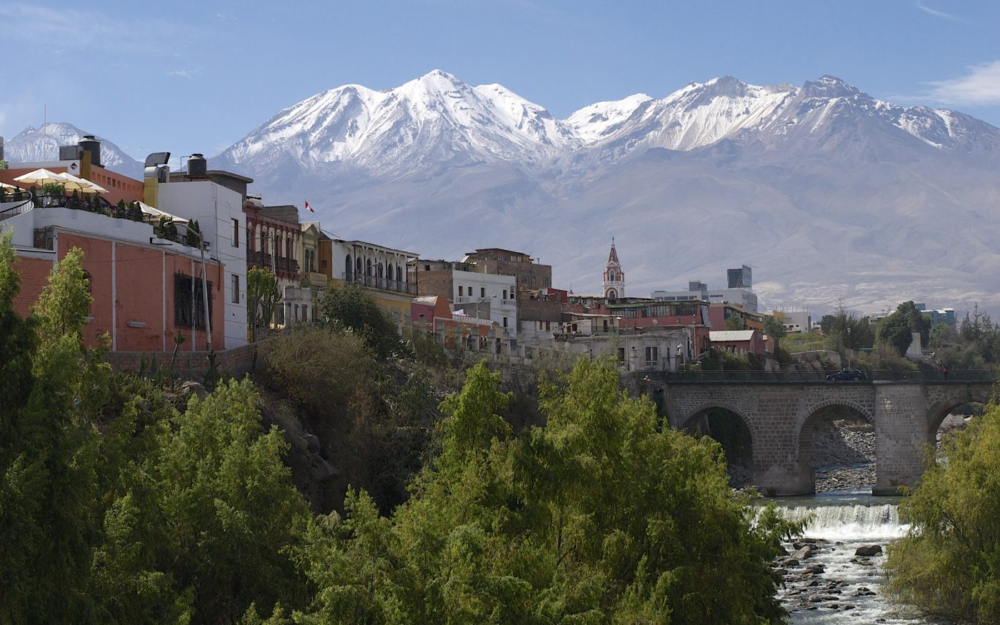
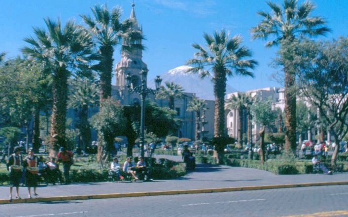
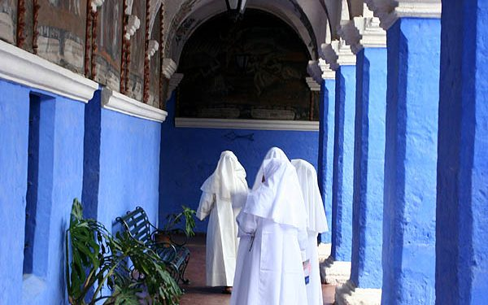
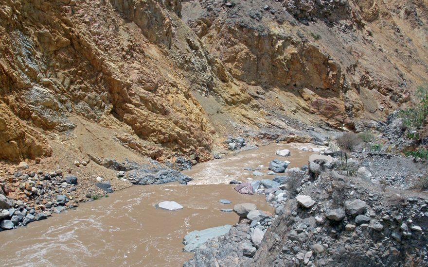
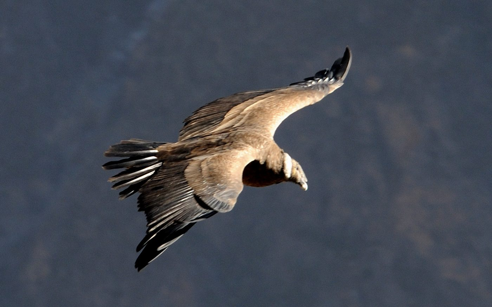
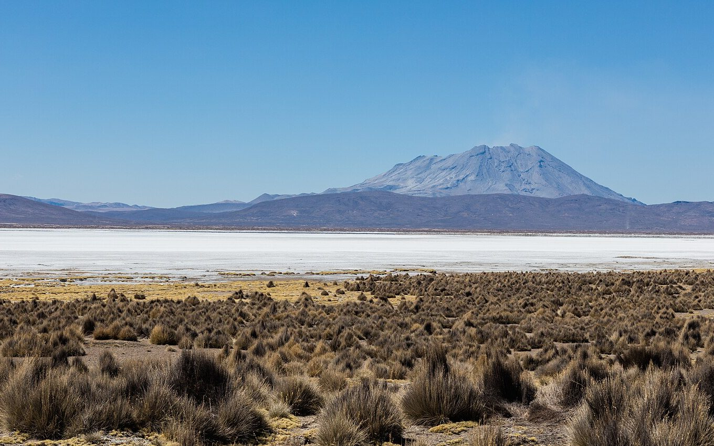

10. – 18. Oktober 2026 · 9 Nächte

Erstellt für Ralf · Recherche Stand September 2026
Preise/Verfügbarkeit vor Buchung bestätigen. Fotos: Wikimedia Commons (siehe Quellen).
| Was | Selbst fahren? | Empfehlung |
|---|---|---|
| Tag 3 Chachani Downhill | 4×4-Auffahrt selbst möglich | Auto selbst + Bikes/Guide lokal mieten (Sicherheit/Material) |
| Tag 4 Sillar / Yura / Rafting | Sillar/Yura selbst; Rafting oft mit Operator | Auto behalten |
| Tag 5–6 Colca | Ja, Selbstfahrt AQP → Cabanaconde | Auto mitnehmen; Trek zu Fuß; Übernachtung Sangalle |
| Tag 7 Salinas | Ja, klassische Selbstfahrer-4×4-Tour | Früh starten, Vollkasko, Benzin voll |
| Tag 8 Lokal-Adventure | Ja (Yura, Miradores, Schotter) | Rückgabe abends in AQP |
| Punkt | Empfehlung |
|---|---|
| Abholung | So 12.10. ca. 07:00–08:00 Flughafen AQP oder Hotel-Delivery |
| Rückgabe | Fr 17.10. ca. 18:00–19:00 in Arequipa (Hotel/Flughafen) |
| Dauer | 6 Tage (deckt Chachani, Colca-Hin/Rück, Salinas, Tag-8 ab) |
| Fahrzeug | Pickup/SUV 4×4 (Hilux, Fortuner o.ä.), ideal hohe Bodenfreiheit |
| Preis-Orientierung | ca. 80–120 USD/Tag → 480–720 USD für 6 Tage (2 Personen teilen) |
| Extras | Vollkasko, 2. Fahrer, Zweitreifen-Check, Kanister/Wasser, Offline-Maps |
| Anbieter | Atix (Hilux ab ~80 USD, AQP Airport) · Kala Rent a Car (+51 959 225 662) · Caminos (+51 959 975 711) · Vergleich auch Kayak/Localdesk |
Kaution/Deposit kann hoch sein (teils >1.000 USD auf der Karte). Kilometerkontingent und Schotter-/Hochland-Klausel vor Unterschrift prüfen.

Schematische Routenübersicht: Orange Chachani · Grün Colca · Blau Salinas. Nicht GPS-genau.
| Tag | Datum | Programm | Auto? | Übernachtung |
|---|---|---|---|---|
| 1 | Fr 10.10. | Flug LAX→LIM→AQP, Transfer, Check-in, ruhig | Nein (Taxi) | Arequipa Centro |
| 2 | Sa 11.10. | Akklimatisation: Plaza, Santa Catalina, Yanahuara | Nein | Arequipa Centro |
| 3 | So 12.10. | 4×4 hoch zum Chachani + Downhill-Bikes | Abholen | Arequipa Centro |
| 4 | Mo 13.10. | Sillar + Yura selbst ODER morgens Rafting, nachmittags mit Auto | Ja | Arequipa Centro |
| 5 | Di 14.10. | Selbstfahrt nach Cabanaconde, Trek nach Sangalle | Ja (parken in Cabanaconde) | Sangalle |
| 6 | Mi 15.10. | Aufstieg, Cruz del Cóndor, Rückfahrt AQP mit eigenem 4×4 | Ja | Arequipa Centro |
| 7 | Do 16.10. | Laguna de Salinas Selbstfahrer-Tag | Ja | Arequipa Centro |
| 8 | Fr 17.10. | Lokaler 4×4-Tag (Miradores/Yura/Schotter) · Auto zurück | Rückgabe abends | Arequipa Centro |
| 9 | Sa 18.10. | Puffer / Stadt / Abflug | Nein | AQP oder Flug |

Chachani – Startpunkt für euren Downhill-Tag (Auffahrt mit dem Miet-4×4).
Morgens Auto holen → auffahren Richtung Las Antenas / Downhill-Start (~4.700 m) → Abfahrt per Bike → Abend wieder Hotel. Benzin voll, warme Kleidung, früh starten.
Arequipa → Pampa Cañahuas / Patapampa → Chivay → Cabanaconde (ca. 5–6 Std. inkl. Stops). Auto in Cabanaconde sicher parken (Hotel/Hostal). Trek Sangalle. Rückweg über Cruz del Cóndor. Boleto Turístico Colca ~S/70 p.P. nicht vergessen.
Via Chiguata / Cimbral zur Laguna de Salinas. Hochland-Schotter, dünne Luft. Eintritte Reserve/Lagune bar. Oktober: eher Salar-Charakter.





El Misti über Arequipa – Morgenstimmung vom Centro / Yanahuara.
| Posten | für 2 ca. | Hinweis |
|---|---|---|
| 4×4 Mietwagen 6 Tage | 480–720 USD | 80–120 USD/Tag inkl. grober Vollkasko-Spanne |
| Benzin Colca + Salinas + Stadt | 80–140 USD | abhängig von Route/Umwegen |
| Chachani Bikes + Guide (ohne Transport) | 120–180 USD | günstiger als Full-Package mit 4×4 |
| Colca: Boleto + Sangalle + Essen | 100–160 USD | DIY statt 70–75 USD-Gruppentour p.P. |
| Salinas Eintritte | 10–25 USD | bar, Soles |
| Optional Rafting Tag 4 | 40–70 USD | nur wenn gewünscht |
| Hotels 8 Nächte DZ Mid | 360–720 USD | Centro durchbuchen + 1× Sangalle |
| Essen & Stadt-Taxi Tag 1–2/9 | 200–320 USD | |
| Orientierung vor Ort | ca. 1.400–2.300 USD | für beide, ohne internationale Flüge |
| Nacht | Datum | Ort | Notiz |
|---|---|---|---|
| 1–4 | 10.–13.10. | Arequipa Centro | Basis-Hotel, Auto ab 12.10. am Hotel/Parkplatz |
| 5 | 14.10. | Sangalle | Auto bleibt in Cabanaconde |
| 6–8 | 15.–17.10. | Arequipa Centro | Gleiches Hotel |
| 9 | 18.10. | AQP oder Flug | nur bei Abflug 19.10. |
Hotels: Tierra Viva Plaza · Casa Andina · El Cabildo / Maison d’Elise · Budget: Los Tambos
| Thema | Kontakt |
|---|---|
| 4×4 Atix | atixrentacar.com · Hilux ~80 USD/Tag · Abholung AQP Airport |
| 4×4 Kala | +51 959 225 662 · info@kalarentacar.pe · (054) 624021 |
| 4×4 Caminos | +51 959 975 711 · caminos-rentacar.com |
| Chachani Bikes/Guide | Turismo Liberty WA +51 959 175 901 / +51 944 134 797 |
| Optional Rafting | Anderra Travel +51 958 138 789 |